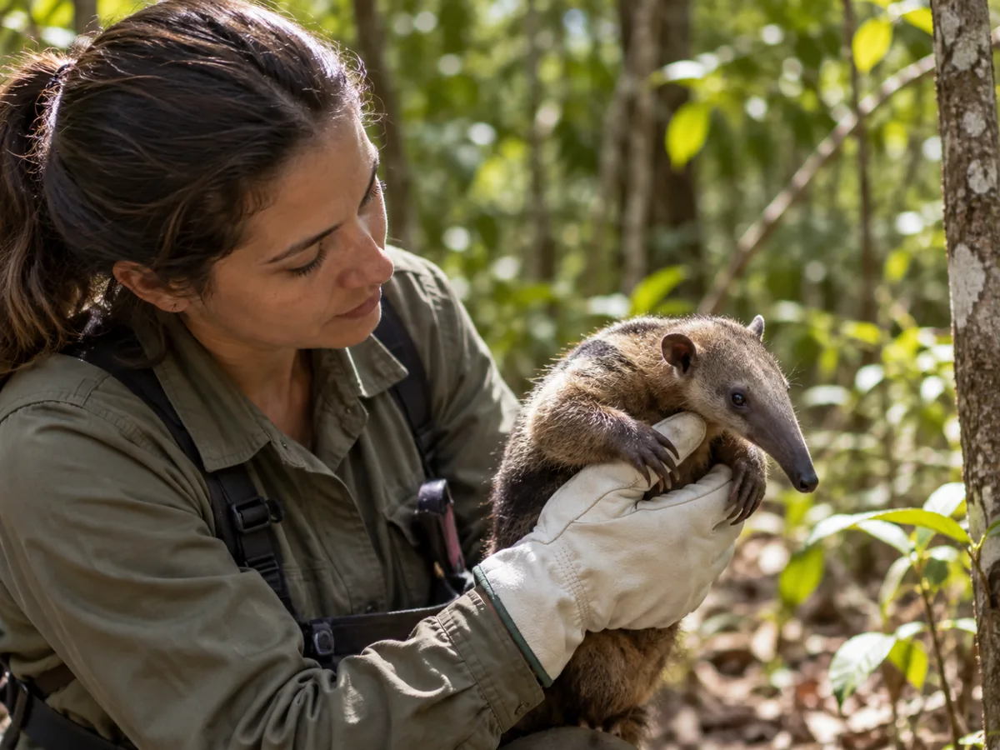
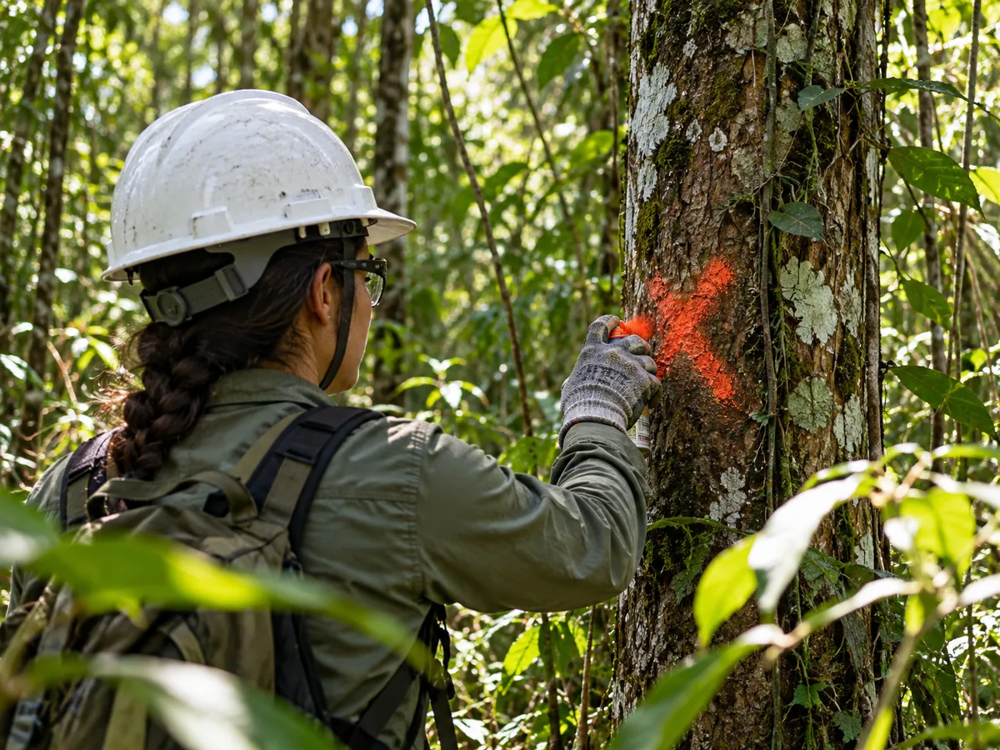
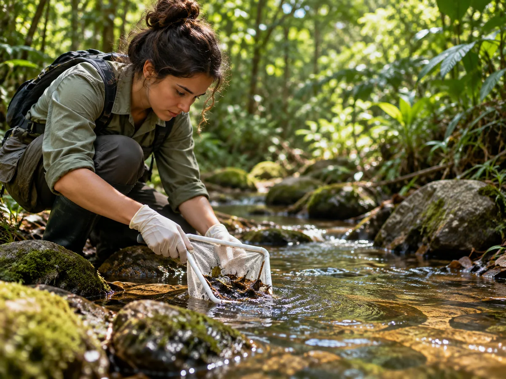
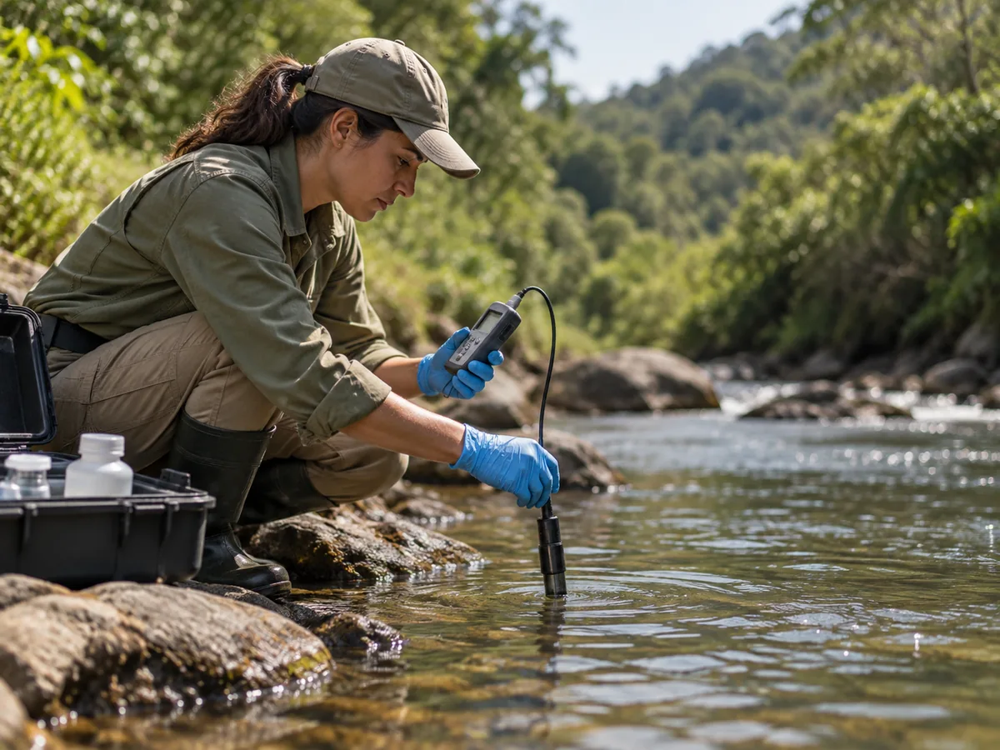
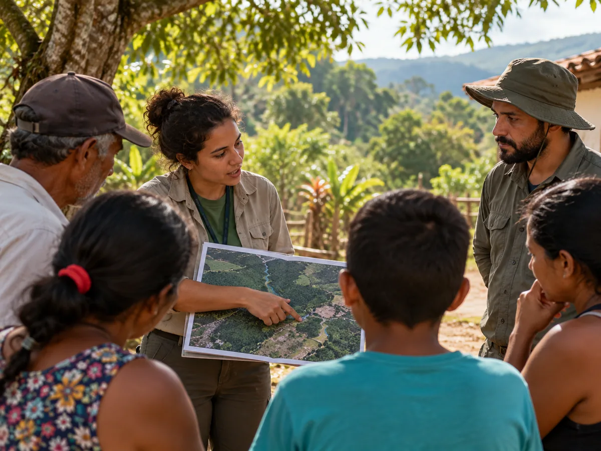
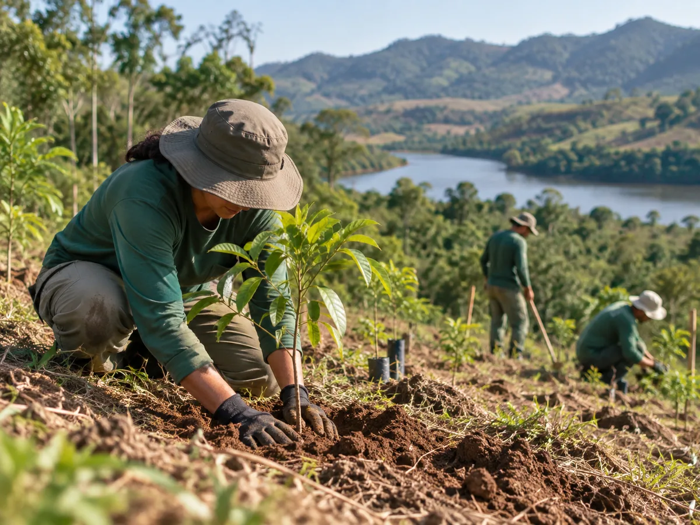

Gestão Ambiental
Licenciamento Ambiental
Estudos, relatórios, programas e apoio técnico às diferentes etapas do processo ambiental.
Explorar área →Esta página apresenta os tipos de serviços e frentes técnicas que a JSB pode estruturar conforme o empreendimento, o processo ambiental e as necessidades de cada demanda.
Acesse cada frente para entender aplicações, etapas, produtos técnicos, integrações e referências relacionadas.
Estudos, relatórios, programas e apoio técnico às diferentes etapas do processo ambiental.
Explorar área →
FaunaLevantamento, monitoramento, afugentamento, resgate e planejamento para salvamento de fauna.
Explorar área →
FloraCaracterização da vegetação, inventários, acompanhamento de intervenções e medidas associadas.
Explorar área →
MonitoramentoAcompanhamento de organismos, comunidades e indicadores biológicos ao longo do tempo.
Explorar área →
Qualidade AmbientalPlanejamento de medições, coletas, campanhas e consolidação de resultados ambientais.
Explorar área →GIS, mapas temáticos, drones, sensoriamento remoto e organização de dados geoespaciais.
Explorar área →
SocioambientalPalestras, treinamentos, DDS, oficinas, campanhas e programas para diferentes públicos.
Explorar área →
RecuperaçãoDiagnóstico, planejamento, revegetação, acompanhamento e monitoramento de áreas impactadas.
Explorar área →As frentes podem ser contratadas de forma isolada ou integrada. O escopo adequado depende das características do empreendimento, do objetivo técnico e das exigências aplicáveis ao processo.